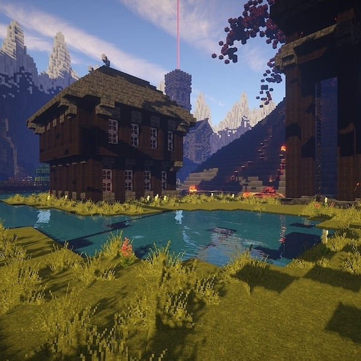

The Most Popular Video Games
A Snapshot of Modern Gaming
Here's a look at some of the most popular video games as of 2024, based on player count, community engagement, and cultural impact.
1. Fortnite
Since its release in 2017, Fortnite has remained at the top of gaming charts. Developed by Epic Games, this battle royale shooter is known for its building mechanics and fast-paced action.
2. Call of Duty: Warzone
Call of Duty has a long-standing legacy, and Warzone (2020) has elevated it even further. This free-to-play battle royale game features intense action, realistic graphics, and deep customization.
3. Minecraft
Despite releasing in 2011, Minecraft remains one of the most beloved games worldwide. Its open-ended gameplay encourages creativity, exploration, and survival.
4. League of Legends
Since 2009, League of Legends has dominated the competitive gaming scene. This multiplayer online battle arena (MOBA) continues to attract millions of players worldwide.
5. Valorant
Released in 2020, Valorant quickly became a leading tactical shooter. It blends precise gunplay with unique character abilities, drawing comparisons to Counter-Strike and Overwatch.
6. Genshin Impact
Genshin Impact took the gaming world by storm with its expansive open-world, engaging combat, and anime-inspired art style. Regular updates keep players engaged.
7. Apex Legends
Apex Legends combines hero-based mechanics with fast-paced battle royale action, making it one of the most popular shooters available.
8. Roblox
Roblox is a platform for user-generated content that surged in popularity, allowing players to create and share games across various genres.
9. Elden Ring
Released in 2022, Elden Ring became a cultural phenomenon. This action RPG, co-created by George R.R. Martin, features an expansive open world and deep lore.
10. The Legend of Zelda: Tears of the Kingdom
The 2023 sequel to Breath of the Wild continues Link’s journey in a beautifully crafted open world filled with adventure and mystery.
Conclusion
The current gaming landscape is vast and diverse, offering something for everyone, whether you prefer the competitive thrills of a shooter or the creative freedom of a sandbox game. These titles not only dominate player numbers but also influence culture, technology, and the future of interactive entertainment. As gaming continues to evolve, these games stand as pillars of innovation, community, and storytelling in the digital world.